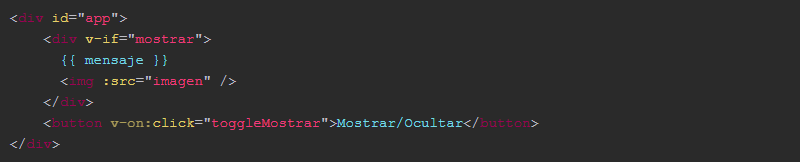
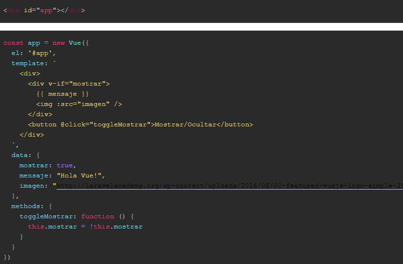

Introducction to Vue.Js

With this article I want to show you how easy it is to start working with Vue so you can see its simplicity. To see how it works Vue you do not need Webpack, nor Babel, nor transpilers, nor a complex structure of files and folders, you only need a lifelong HTML file, a CSS style sheet, a JavaScript file for the code and import the library from a CDN such as cdnjs.org.
We are going to use this index.html file:
It is a normal HTML, only to emphasize that we have a div element with the id app and the link to library vue.js in its version 2. Now we are going to add JavaScript code and you can write it in the index.html inside a script element or use a separate JavaScript file and link it just like the Vue library. It is a normal HTML, only to emphasize that we have a div element with the id app and the link to library vue.js in its version 2.
Vue initialization
In order to start working with Vue, we have to create a new instance and pass certain properties to the configuration object, including the DOM element where we will render or make use of Vue. In this case it would be the div with the ID app:
Something as simple as that is what is needed to initialize Vue in a web project. Now let's see more things like for example how data is displayed using double data-binding:
Show data
Taking the previous HTML and placing the following between the div id = "app":
We are indicating that our instance of Vue is going to have a type of data called message and that we can manipulate it from the code.
To do this we simply add a new property-object called data where all the properties and / or data models that we want to use in the view will be.
Events and Methods
Developing a SPA is that there are changes dynamically in our project. We can achieve this by using methods that make changes and events that trigger these methods.
The methods are indicated just like the data in a property-object called methods.
We are going to add a button element that listens to a click event and triggers a toggle method, showing that the only thing it will do is change the value of the data to show the opposite to show the previous elements or not. It would be something like this:
Now the JavaScript code would be the next:
Realize that to make use of the data show within the methods, we have to use the this object if we could not reference it and use it.
Now, every time we click on the button, the information will be shown or hidden in the browser.
Templates
We can also work with templates, that is, have the HTML code in our instance of Vue. It is not the best practice, but for something timely it can be very useful. Thus, for example, we worked with Angular v1 in its beginnings.
TWe can reduce the previous code to the following HTML and JavaScript.
We have used the Vue template property to add the HTML. Keep in mind that just like in React, everything must always be included in a single element of the DOM..
If this does not convince you, you can use the template HTML5 element and reference it within the Vue instance as follows:
Browse data listings
One of the things that are most used in projects is to go through a list of items to display on the screen. In Vue it is very simple with the v-for directive and it is done in a very similar way to how it is done in Angular.
Imagine that we have a data in our model, which is an array of objects called courses:

To show the information in the HTML view, with a list for example and each item li to be a link to the course, we would have to do the following. (Note the data bind using the abbreviated syntax of: instead of v-bind in the key and href directives):
Summary
Realize that all this we have been able to execute in a single HTML file without using any type of tool, NPM or transpiler. It is pure HTML and JavaScript (and CSS if we had used it) and it allows you to have a first contact with the library and see what it can do with it and how it works.